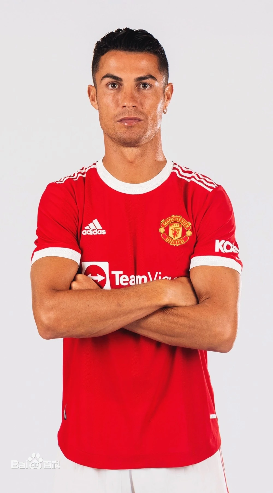

克里斯蒂亚诺·罗纳尔多个人介绍足球传奇职业数据个人集锦图片欣赏新闻动态国家队生涯登陆 克里斯蒂亚诺·罗纳尔多·多斯·桑托斯·阿韦罗（Cristiano Ronaldo dos Santos Aveiro），简称“C罗”，1985年2月5日出生于葡萄牙马德拉岛丰沙尔，葡萄牙职业足球运动员，司职边锋/中锋，现效力于英超的曼彻斯特联足球俱乐部 [1] 。 1995年，C罗加入马德拉国民足球俱乐部，1996年转入葡萄牙体育足球俱乐部青训体系。2001年，C罗在葡萄牙体育足球俱乐部经历U16、U17、U18、二线队和一线队5个不同级别赛事 [2] 。2003年，C罗以1224万英镑转会曼彻斯特联足球俱乐部 [3] ，并帮助球队获得包含2007-08赛季欧洲冠军联赛冠军在内的10项锦标 [4] 。在曼联期间收获了2006-07赛季英格兰足球超级联赛最佳球员 [5] ；2008年金球奖、国际职业足球运动员联合会最佳球员、英超最佳球员、英超金靴等奖项 [6-7] 。2009年，C罗以8千万英镑转会皇家马德里足球俱乐部 [8] ，并在9年间帮助球队获得包括2013-14赛季 [9] 、2015-16赛季、2016-17赛季、2017-18赛季4次欧洲冠军联赛冠军在内的16项锦标 [10] 。在皇马期间收获了2013年、2014年、2016年、2017年金球奖等奖项 [11] 。2018年，C罗以1亿欧元身价转会至意甲尤文图斯足球俱乐部 [12] ，并随队夺得2018-19赛季、2019-20赛季意大利足球甲级联赛冠军 [13] 。2021年，C罗重回曼联 [1] 。 |
||||
|